library(statmodels7)
data(mcycle, package = "MASS")
fit0 <- statmod(accel ~ s(times, bspline_smooth(k = 20)),
distrib = gaussian1_distrib(), data = mcycle)
fit1 <- statmod(accel ~ s(times, bspline_smooth(k = 20)) |
sigma ~ s(times, bspline_smooth(k = 10)),
distrib = gaussian1_distrib(), data = mcycle)
summary(fit0)
#> A statmod fit
#>
#> Call: statmod(formula = accel ~ s(times, bspline_smooth(k = 20)), distrib = gaussian1_distrib(),
#> data = mcycle)
#>
#> Distribution: gaussian1 Observations: 133
#>
#> === mu [identity link]
#>
#> Parametric terms
#> estimate se z p lower upper
#> (Intercept) -25.55 1.966 -12.99 < 1e-16 -29.4 -21.69
#>
#> s(times, bspline_smooth(k = 20)) [19 coefficients, edf 11.69]
#> estimate se z p lower upper
#> lambda [reml] 6.624e-05 2.857e-05 2.844e-05 0.0001543
#> lin 14.32 1.973 7.258 3.921e-13 10.46 18.19
#>
#> === sigma [log link]
#>
#> Parametric terms
#> estimate se z p lower upper
#> (Intercept) 3.121 0.06445 48.42 < 1e-16 2.995 3.247
#>
#> 95% intervals, bayesian variance
#> conditional log-likelihood -597.478187 effective df 13.69
#> cAIC 1222.342 cBIC 1261.919
#> fitted in 2.27 s
#> inner max |grad|/se 1.1e-15 min eigen 1
#> outer max |grad|/se 7.1e-15 min eigen 1
#> 1 note: print(summary(fit), notes = TRUE)
summary(fit1)
#> A statmod fit
#>
#> Call: statmod(formula = accel ~ s(times, bspline_smooth(k = 20)) |
#> sigma ~ s(times, bspline_smooth(k = 10)), distrib = gaussian1_distrib(),
#> data = mcycle)
#>
#> Distribution: gaussian1 Observations: 133
#>
#> === mu [identity link]
#>
#> Parametric terms
#> estimate se z p lower upper
#> (Intercept) -25.1 2.07 -12.13 < 1e-16 -29.16 -21.05
#>
#> s(times, bspline_smooth(k = 20)) [19 coefficients, edf 14.11]
#> estimate se z p lower upper
#> lambda [reml] 6.739e-05 2.876e-05 2.92e-05 0.0001555
#> lin 14.09 1.348 10.45 < 1e-16 11.44 16.73
#>
#> === sigma [log link]
#>
#> Parametric terms
#> estimate se z p lower upper
#> (Intercept) 2.704 0.06844 39.51 < 1e-16 2.57 2.838
#>
#> s(times, bspline_smooth(k = 10)) [9 coefficients, edf 6.00]
#> estimate se z p lower upper
#> lambda [reml] 0.3645 0.3052 0.07061 1.881
#> lin 0.4721 0.07619 6.196 5.776e-10 0.3228 0.6214
#>
#> 95% intervals, bayesian variance
#> conditional log-likelihood -537.852231 effective df 22.11
#> cAIC 1119.922 cBIC 1183.824
#> fitted in 2.41 s
#> inner max |grad|/se 2.9e-14 min eigen 0.004
#> outer max |grad|/se 4.9e-11 min eigen 0.71
#> 2 notes: print(summary(fit), notes = TRUE)3 Graphs of a fit
The first two chapters read a fit through numbers: summary(), coef(), confint(), residuals() and predict(). This chapter draws the same quantities. The function autoplot() takes a fit and returns a graph of the effect of a term, of the fitted distribution or of the residuals, and plot() prints that graph. The later chapters add the graphs of their own terms, and the last section of this chapter lists which chapter shows each of them.
We use four fits. The first two are the models of Chapter 1 for the motorcycle data, one with a constant standard deviation and one with a smooth standard deviation. The third is the Poisson model of insurance claims of Section 2.9, which has two factors, an ordered factor and an offset, and the fourth is a negative binomial model of the number of fish species in a lake, a count with a discrete distribution.
3.1 The function plot()
We fit the two motorcycle models again.
With no argument other than the fit, plot() draws four diagnostic graphs. Three of them read the quantile residuals, which we introduced in Section 1.6. For observation \(i\) with fitted distribution function \(\hat F_i\), the quantile residual is \(r_i = \Phi^{-1}(\hat F_i(y_i))\), where \(\Phi\) is the standard gaussian distribution function. If the model is right, the residuals are standard gaussian whatever the distribution of the response.
plot(fit0)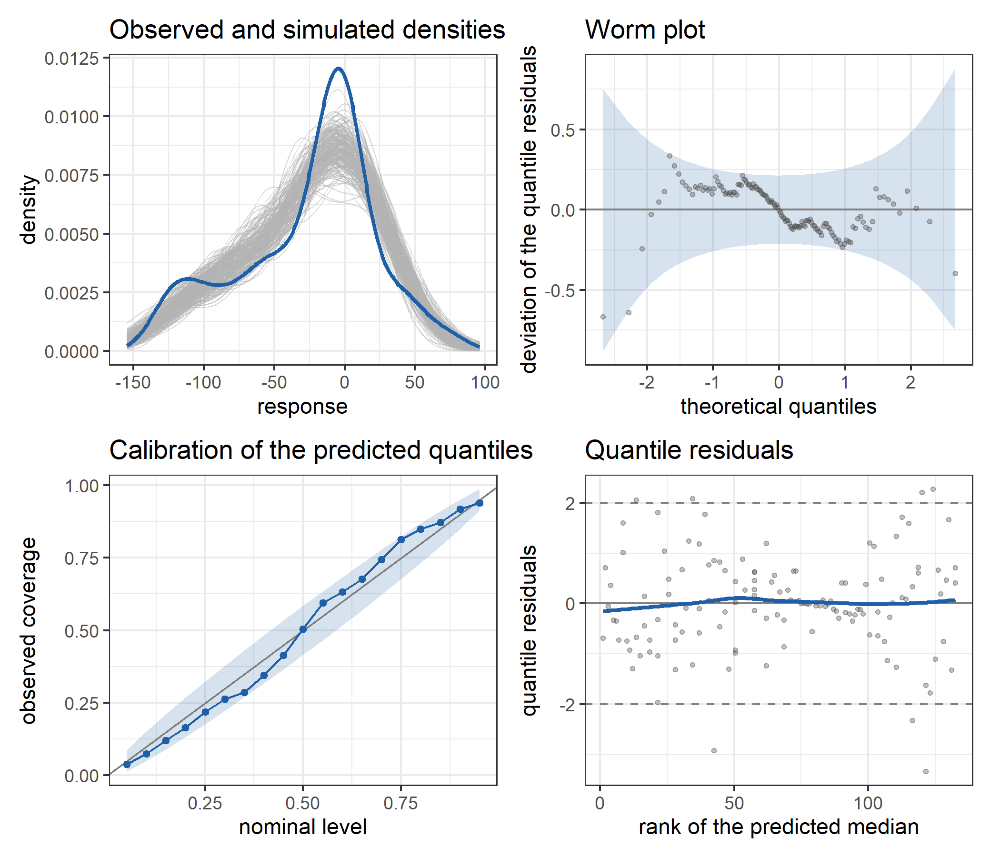
The upper left graph compares the observed density of the acceleration, the dark curve, with the densities of 200 responses that we simulate from the fitted model, the grey curves. If the model describes the data, the observed density lies among the simulated ones. The upper right graph is the worm plot, which plots each sorted residual minus the gaussian quantile that it should have, so that a departure from the model shows as a departure from the horizontal axis. The lower left graph is the calibration of the predicted quantiles. For each probability \(p\) on the horizontal axis, the vertical axis shows the fraction of the observations at or below the quantile \(\hat F_i^{-1}(p)\) that the model predicts for them. The lower right graph shows the residuals against the rank of the median that the model predicts for each observation. Section Section 3.4 describes the four graphs in detail.
For this model the upper left graph shows the problem at once. The observed density has a higher and narrower peak than the simulated densities, and a bump near \(-110\) that most of them do not have. The model uses one standard deviation for all times, as we saw in Section 1.6, and the simulated responses are too spread out in the quiet phase and not spread out enough in the middle phase.
The function plot() prints the graph and returns it without printing it again. The function autoplot() draws the same graph and only returns it, as an object of the package ggplot2, so we can store it, add layers to it and save it. Both functions have the same arguments:
term, the name of a term assummary()prints it, or the name of a variable. A variable selects every term of an equation that reads it, soterm = "times"names the smooth oftimes;param, the name of the equation, such as"mu"or"sigma". It can be omitted when the term belongs to one equation only;plot_type, an object that selects the graph. Each type of graph is a function whose name starts withplot_, and its arguments are the options of the graph;data, the data frame of the fit. The fit does not keep its data, so a graph that reads a covariate needs it.
We see what happens when data is missing. The call below requests the effect of times and does not pass the data:
tryCatch(autoplot(fit0, term = "times"),
error = function(e) conditionMessage(e))
#> [1] "the graph plot_effect() reads the covariates, and a statmod fit does not keep its data; give the fitting data as 'data'."The types of graph come in three kinds. A graph of a term (for example plot_effect()) needs the argument term. A graph of the fitted distribution (for example plot_quantiles()) describes the whole model and takes neither term nor param; the equation of plot_param() is an option of the type. A diagnostic graph (for example plot_worm()) compares the fit with the data. When we give term and no plot_type, the graph is plot_effect() for most terms, and the later chapters introduce the terms that have another default. When we give neither term nor plot_type, the graph is the group of four diagnostic graphs above.
3.2 The effect of a term
The mean of fit0 is \(\mu_i = \beta_0 + f(t_i)\), where \(t_i\) is the time of observation \(i\), \(\beta_0\) the intercept and \(f\) the smooth function of time. The effect of the term times is the curve \(f\), drawn as statmod() estimates it, that is with the constraint that makes the smooth sum to zero over the observed times (Section 1.3).
autoplot(fit0, term = "times", data = mcycle)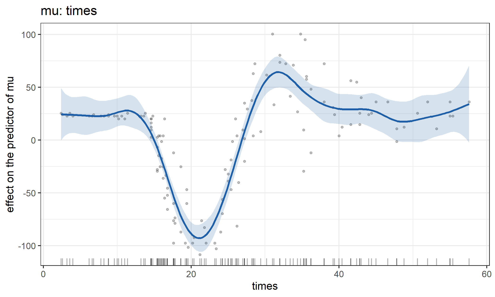
The band is the estimate plus and minus 1.96 standard errors, computed from the variance matrix that vcov() returns by default (Section 2.1). The points are the partial residuals \(f(t_i) + (z_i - \eta_i)\), where \(\eta_i\) is the predictor of observation \(i\) and \(z_i\) is the working response of the equation: \(z_i = \eta_i + s_i / w_i\), with \(s_i\) the derivative of the log-likelihood of observation \(i\) with respect to \(\eta_i\) and \(w_i\) the expected information in \(\eta_i\). For the mean of a gaussian distribution with the identity link, \(z_i - \eta_i = y_i - \hat\mu_i\), so each point is the observation without the intercept, \(y_i - \beta_0\), and the distance of a point from the curve is the residual of the observation. The marks along the horizontal axis show the observed times.
The same graph is available for the other equations of the model. The standard deviation of fit1 has its own smooth of time, and we draw its effect on \(\log\sigma\), the scale on which the equation is written.
autoplot(fit1, term = "times", param = "sigma", data = mcycle)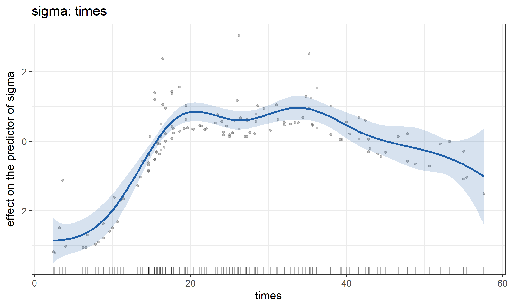
For the equation of a scale parameter the partial residuals are not symmetric around the curve. The working response of \(\log\sigma\) is \(z_i = \eta_i + \big((y_i - \mu_i)^2/\sigma_i^2 - 1\big)/2\), whose distribution is skewed: in the middle of the range most points lie below the curve and a few lie far above it.
A factor is drawn with one estimate and one interval for each level. We show it with the insurance model of Section 2.9. The response Claims is the number of claims of a group of policy holders, Holders is the number of policy holders, and the offset log(Holders) turns the equation into a model for the rate of claims per policy holder.
data(Insurance, package = "MASS")
fit_i <- statmod(Claims ~ offset(log(Holders)) + District + Group + Age,
distrib = poisson_distrib(), data = Insurance)
summary(fit_i)
#> A statmod fit
#>
#> Call: statmod(formula = Claims ~ offset(log(Holders)) + District +
#> Group + Age, distrib = poisson_distrib(), data = Insurance)
#>
#> Distribution: poisson Observations: 64
#>
#> === mu [log link]
#>
#> Parametric terms
#> estimate se z p lower upper
#> (Intercept) -1.811 0.03297 -54.91 < 1e-16 -1.875 -1.746
#> District2 0.02587 0.04302 0.6014 0.5475969 -0.05844 0.1102
#> District3 0.03852 0.05051 0.7627 0.4456570 -0.06048 0.1375
#> District4 0.2342 0.06167 3.798 0.0001462 0.1133 0.3551
#> Group.L 0.4297 0.04946 8.688 < 1e-16 0.3328 0.5266
#> Group.Q 0.004632 0.04199 0.1103 0.9121498 -0.07766 0.08693
#> Group.C -0.02929 0.03307 -0.8859 0.3756962 -0.09411 0.03552
#> Age.L -0.3944 0.0494 -7.984 1.418e-15 -0.4913 -0.2976
#> Age.Q -0.000355 0.04892 -0.007256 0.9942102 -0.09623 0.09552
#> Age.C -0.01674 0.04848 -0.3452 0.7299105 -0.1118 0.07828
#>
#> 95% intervals, bayesian variance
#> conditional log-likelihood -184.370777 effective df 10.00
#> cAIC 388.742 cBIC 410.330
#> fitted in 30 ms
#> inner max |grad|/se 1.7e-14 min eigen 0.2autoplot(fit_i, term = "Age", data = Insurance)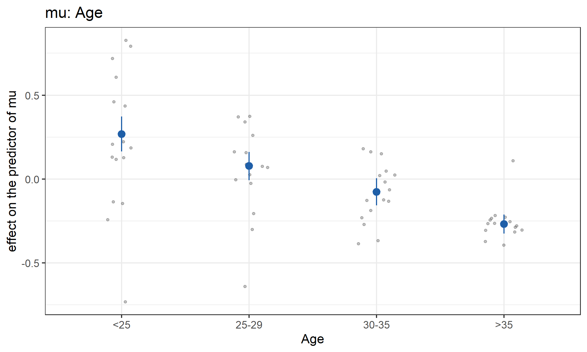
The vertical axis of Figure 3.4 is the contribution of Age to the predictor \(\log\mu_i\), the logarithm of the expected number of claims. The argument scale = "response" draws the parameter itself, \(\mu = \exp(\eta)\). On this scale the effect of a term depends on the other terms of the model, so the graph needs a value for each of them. The variables that we do not give take the median of the data, for a number, or the first level, for a factor. The offset variable Holders is one of them. We choose the value 100 for it with the argument at.
autoplot(fit_i, term = "Age",
plot_type = plot_effect(scale = "response", at = list(Holders = 100)),
data = Insurance)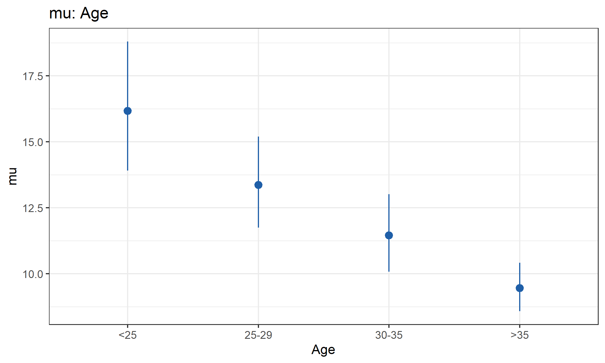
The graph does not draw partial residuals on the response scale.
3.3 The fitted distribution
A model of this toolkit has a distribution of the response at every value of the covariates, so we can draw quantities of that distribution that no single term describes. These graphs take no term. They are the parameter against a covariate, the quantiles, the density and the moments. In each of them the covariate is given by the argument over, and the other covariates are held at their median or first level, or at the values of the argument at.
The function plot_param() draws one parameter of the distribution against a covariate, with a band from predict().
autoplot(fit1, plot_type = plot_param(param = "sigma", over = "times"),
data = mcycle)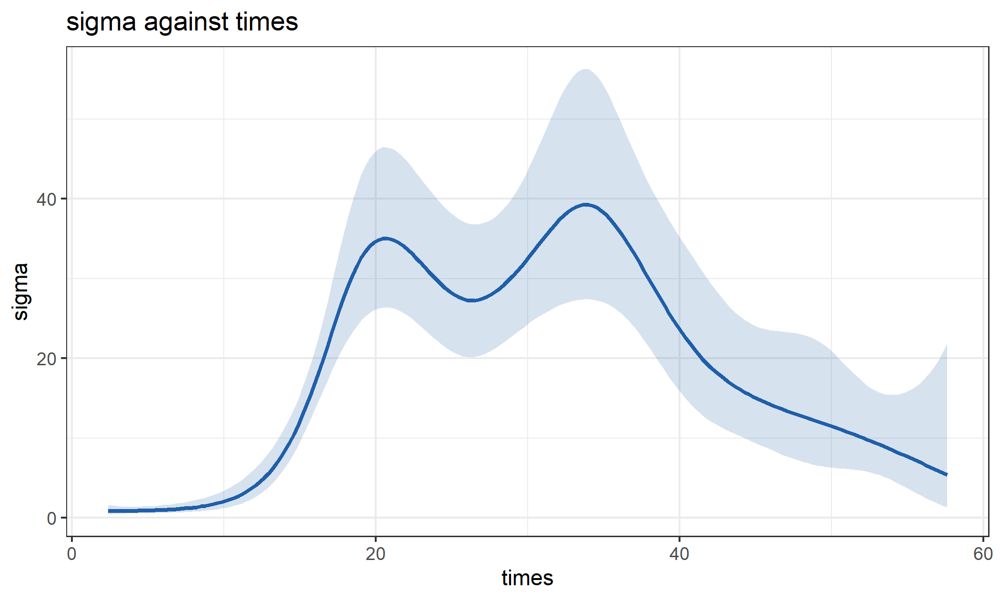
The function plot_quantiles() draws the curves \(t \mapsto F^{-1}(p; \hat\theta(t))\) of the quantiles of the response, for the probabilities of the argument probs, which are 0.05, 0.25, 0.5, 0.75 and 0.95 by default. For the gaussian distribution of fit1 the quantile curve of probability \(p\) is \(\hat\mu(t) + \hat\sigma(t)\,\Phi^{-1}(p)\). The graph also shows the observations, so we can count how many fall outside the outer curves.
autoplot(fit1, plot_type = plot_quantiles(over = "times"), data = mcycle)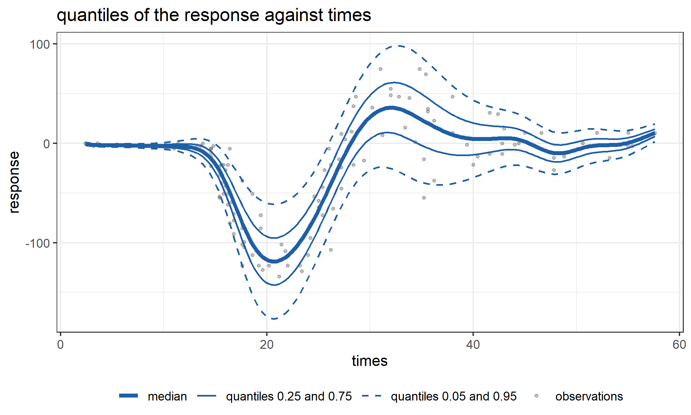
The function plot_density() draws the fitted density at chosen values of the covariates. The argument at is a data frame with one row for each density. Without over, the densities are drawn on a common horizontal axis.
at_times <- data.frame(times = c(10, 20, 30, 45))
autoplot(fit1, plot_type = plot_density(at = at_times), data = mcycle)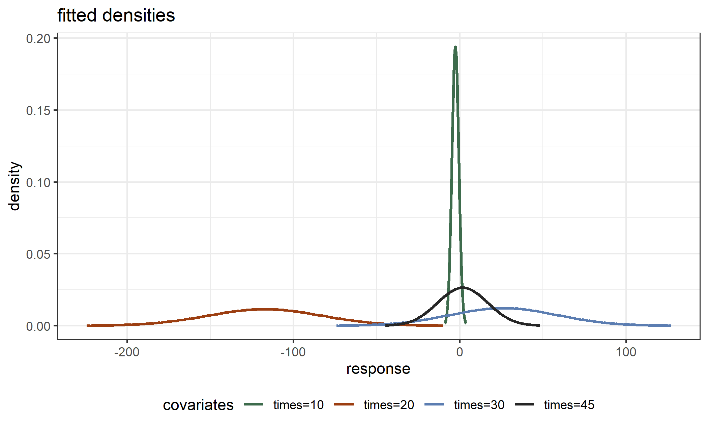
With over = "times" the same densities are drawn in the plane of the data, each one standing on its value of time and turned sideways, so we can compare the shape of the density with the observations around it.
autoplot(fit1, plot_type = plot_density(at = at_times, over = "times"),
data = mcycle)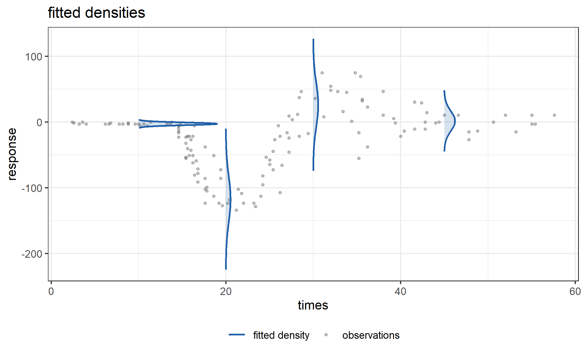
The function plot_moments() draws the mean, the variance, the standard deviation, the skewness or the kurtosis of the distribution against a covariate. Each moment is computed from the parameters by the generics of distributions7, so the graph is not the graph of a parameter. For the gaussian distribution the mean is \(\mu\) and the standard deviation is \(\sigma\), and for most other families the two differ.
autoplot(fit1, plot_type = plot_moments(over = "times",
moments = c("mean", "std_dev")),
data = mcycle)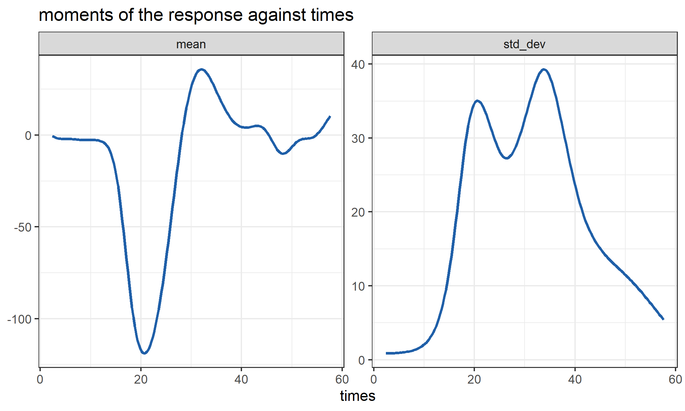
The same graphs describe a distribution on the integers. The data frame species gives the number of fish species fish in 70 lakes and the area lake of each lake (Stasinopoulos et al. 2017), and we fit a negative binomial distribution to the count with the logarithm of the area as the covariate.
data(species, package = "gamlss.data")
species$log_lake <- log(species$lake)
sp <- statmod(fish ~ log_lake, distrib = negbin2_distrib(), data = species,
outer_criterion = ml())
summary(sp)
#> A statmod fit
#>
#> Call: statmod(formula = fish ~ log_lake, distrib = negbin2_distrib(),
#> data = species, outer_criterion = ml())
#>
#> Distribution: negbin2 Observations: 70
#>
#> === mu [log link]
#>
#> Parametric terms
#> estimate se z p lower upper
#> (Intercept) 2.38 0.1792 13.28 < 1e-16 2.028 2.731
#> log_lake 0.1743 0.02312 7.537 4.808e-14 0.129 0.2196
#>
#> === theta [log link]
#>
#> Parametric terms
#> estimate se z p lower upper
#> (Intercept) 0.8174 0.1694 4.824 1.407e-06 0.4853 1.149
#>
#> 95% intervals, bayesian variance
#> conditional log-likelihood -309.922155 effective df 3.00
#> cAIC 625.844 cBIC 632.590
#> fitted in 130 ms
#> inner max |grad|/se 3.3e-15 min eigen 0.11
#> outer max |grad|/se 2.8e-08 min eigen 1For a discrete distribution the quantile function is a step function, so plot_quantiles() draws steps, and plot_density() draws the probability of each integer as a bar.
autoplot(sp, plot_type = plot_quantiles(over = "log_lake"), data = species)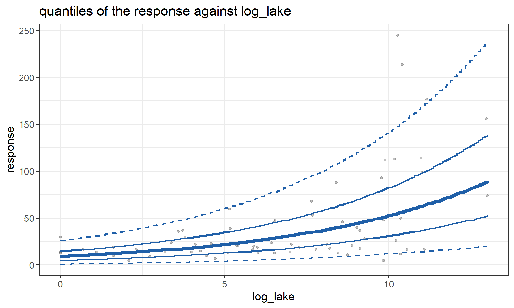
autoplot(sp, plot_type = plot_density(at = data.frame(log_lake = c(2, 5, 8))),
data = species)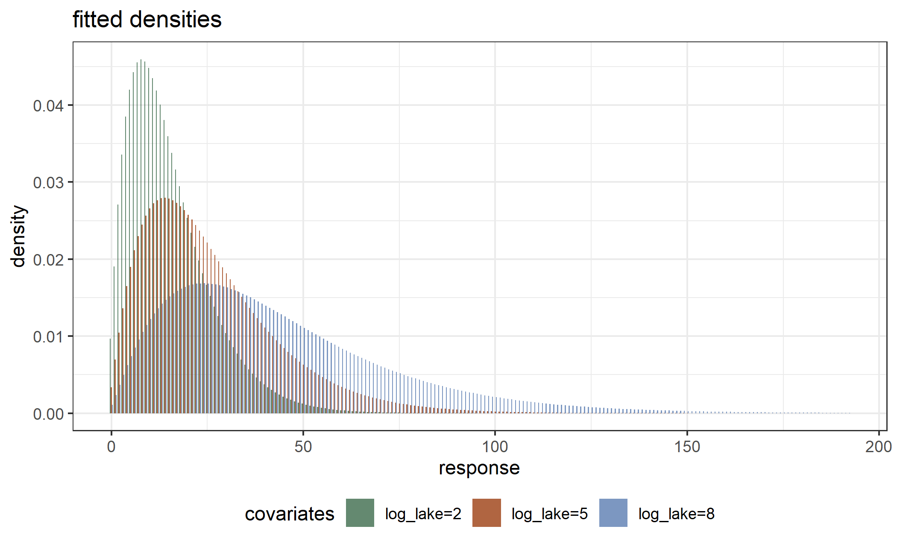
3.4 Diagnostics
The diagnostic graphs compare the fitted model with the data in two ways. The graph plot_ppc() compares the response itself with responses simulated from the model, and the others read the quantile residuals \(r_i\) defined above. We describe each one with the quantity that it draws.
The function plot_ppc() draws the observed density of the response over the densities of n_sim responses that simulate() draws from the fitted model. The simulated responses vary as the response does, and they do not carry the uncertainty of the estimates. The graph is the one that we saw first in Figure 3.1. With the argument statistic, the graph is the histogram of a number computed on each simulated response, with the value on the observed response as a vertical line. A statistic that targets a suspected problem shows it more sharply than the densities. The responses of mcycle are in the order of time, so the first 20 are the quiet phase before the impact, and the model with a constant standard deviation should not simulate a quiet phase. We take the standard deviation of the first 20 responses as the statistic.
early_sd <- function(y) sd(y[1:20])
autoplot(fit0, plot_type = plot_ppc(statistic = early_sd, seed = 1),
data = mcycle)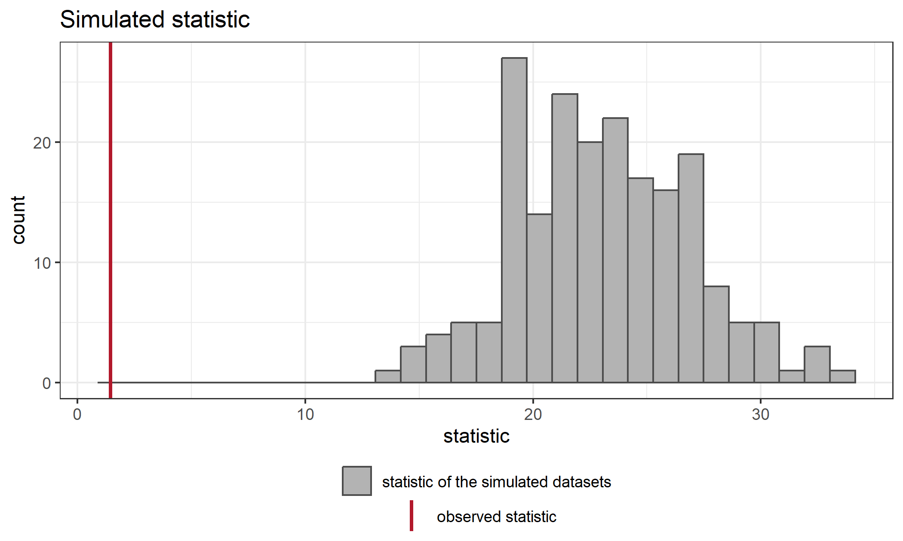
The observed value lies far to the left of the simulated ones. The same graph of densities for the model with a smooth standard deviation shows no such departure.
autoplot(fit1, plot_type = plot_ppc(seed = 1), data = mcycle)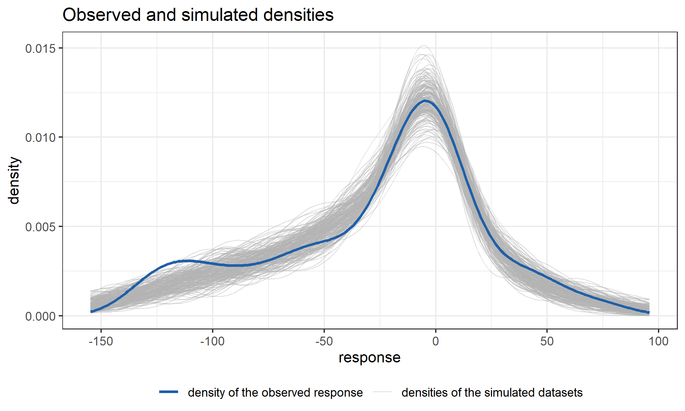
The observed density lies among the simulated densities along its whole range.
The function plot_qq() sorts the residuals as \(r_{(1)} \le \dots \le r_{(n)}\) and plots \(r_{(i)}\) against \(\Phi^{-1}(p_i)\), where \(p_i\) is the \(i\)-th value that ppoints() returns for \(n\) observations. The band of level \(1 - \alpha\) at position \(i\) is the interval from the \(\alpha/2\) quantile to the \(1 - \alpha/2\) quantile of the \(i\)-th order statistic of \(n\) uniform variables, mapped by \(\Phi^{-1}\). That order statistic has the beta distribution with parameters \(i\) and \(n + 1 - i\). The argument band = "simulated" replaces this band with the pointwise interval of the sorted residuals of n_sim responses simulated from the fit.
autoplot(fit1, plot_type = plot_qq(), data = mcycle)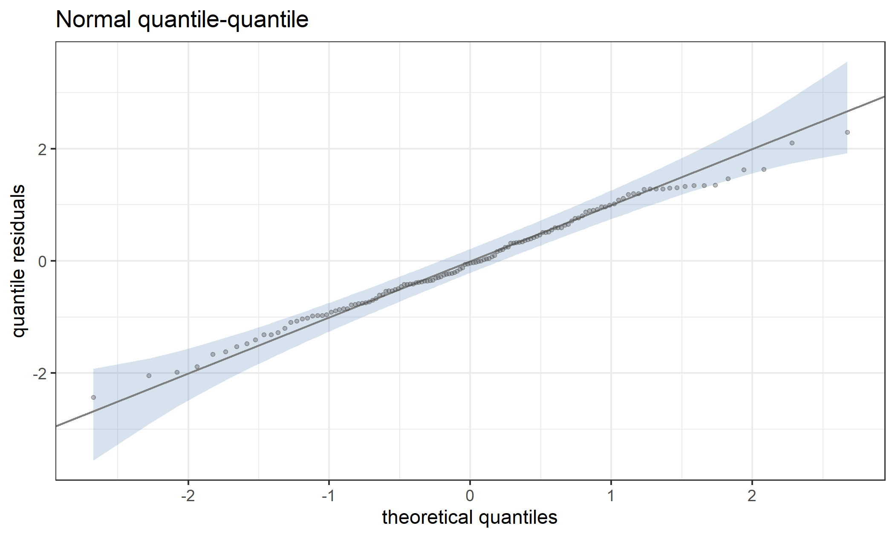
The worm plot of plot_worm() draws \(r_{(i)} - \Phi^{-1}(p_i)\) against \(\Phi^{-1}(p_i)\), with the band detrended in the same way. A mean of the residuals different from zero shows as a shift of the points from the axis, a wrong variance as a slope, a wrong skewness as a U shape and a wrong kurtosis as an S shape. With the argument over, the observations are divided into classes of a covariate of equal size, and the worm plot is drawn once for each class. The model fit0 has a constant standard deviation, and Figure 3.16 shows the consequence.
autoplot(fit0, plot_type = plot_worm(over = "times"), data = mcycle)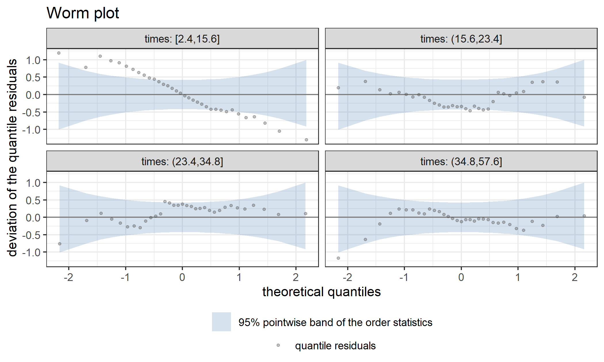
In the first class the points slope downward. The residuals of the early observations have a smaller spread than the standard gaussian distribution, which means that the model overstates the standard deviation there. The graph of the residuals against the covariate, drawn by plot_residuals(), shows the same pattern as Figure 1.2.
autoplot(fit0, plot_type = plot_residuals(against = "times"), data = mcycle)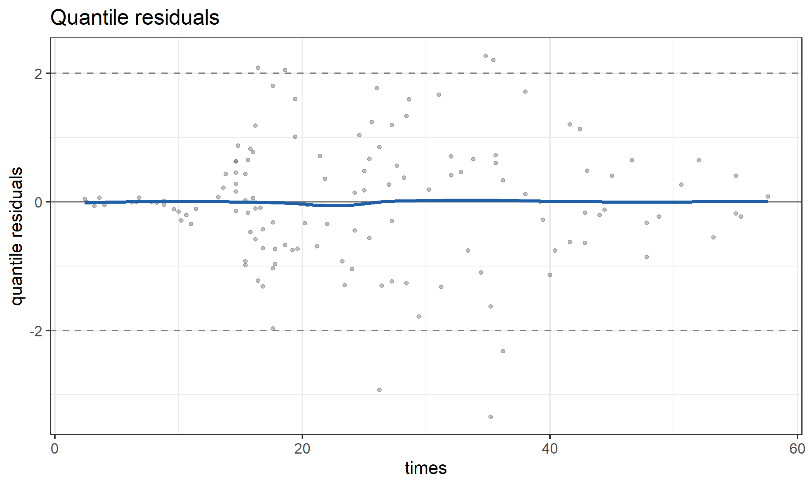
The model fit1 has a standard deviation that depends on time, and the same worm plot shows no trend in any of the four classes.
autoplot(fit1, plot_type = plot_worm(over = "times"), data = mcycle)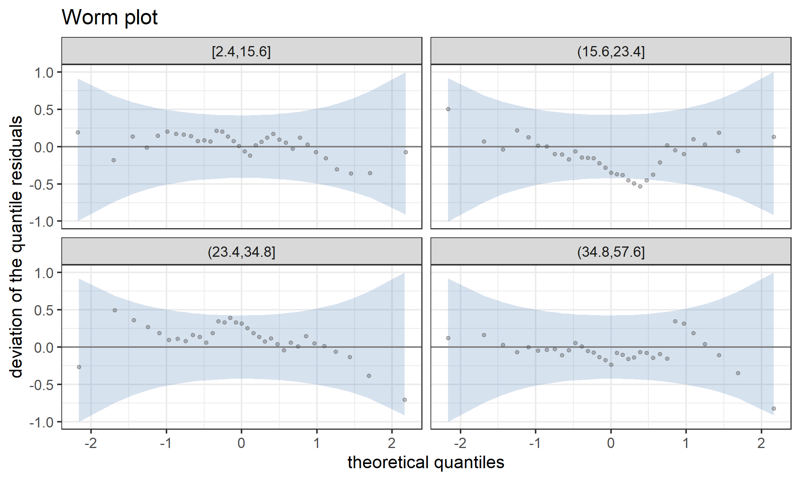
The graph plot_pit() is the histogram of the values \(u_i = \hat F_i(y_i)\) of the fitted distribution function at the observations. If the model is right, the \(u_i\) are uniform on \((0, 1)\), and the graph draws the density scale with the uniform density and a binomial band for each bin. A U shape shows a response more dispersed than the model, a hump shows one less dispersed, and a slope shows a bias in the location.
autoplot(fit1, plot_type = plot_pit(bins = 10), data = mcycle)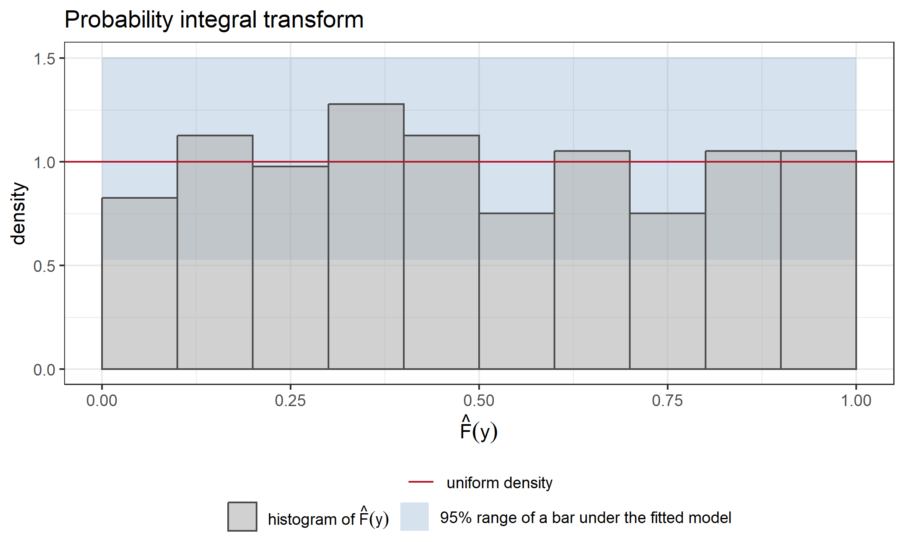
The graph plot_calibration() draws, for each probability \(p\) of the argument probs, the observed coverage \(\hat c(p) = n^{-1}\sum_i 1\{u_i \le p\}\) against \(p\). Under a correct model \(\hat c(p)\) has mean \(p\) and variance \(p(1 - p)/n\), which gives the band \(p \pm 1.96\sqrt{p(1 - p)/n}\). With over, there is one graph for each class of a covariate.
autoplot(fit1, plot_type = plot_calibration(over = "times"), data = mcycle)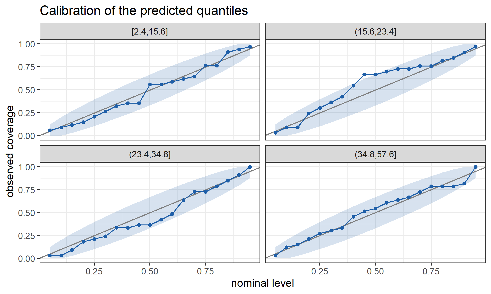
For a discrete distribution the distribution function jumps at each integer, and the residual is randomized between the two values of \(\hat F_i\) at the jump, as Section 1.6 explains. The argument seed of the diagnostic types makes the randomization reproducible. We draw the probability integral transform of the model for the number of species.
autoplot(sp, plot_type = plot_pit(bins = 10, seed = 1), data = species)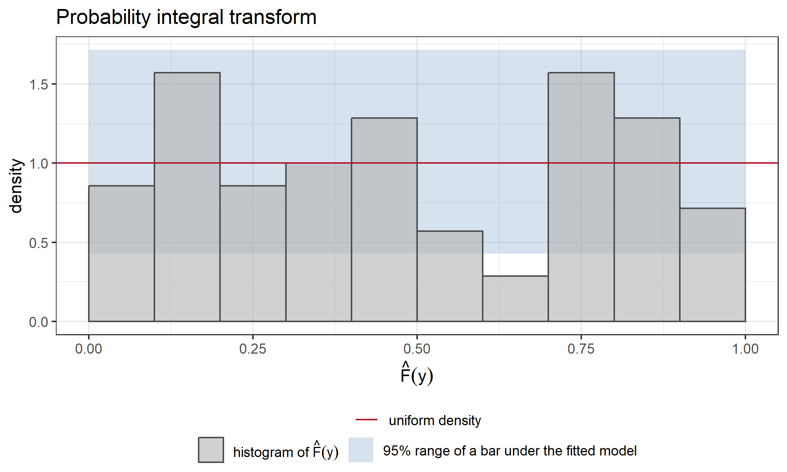
The group of four graphs that plot() draws without arguments is also the value of diagnostics(), which returns the graphs as a named list when we need to draw them one by one. The argument plot_types of diagnostics() takes a list of other diagnostic graphs.
names(diagnostics(fit1))
#> [1] "ppc" "worm" "calibration" "residuals"3.5 The data behind a graph
A graph is built in two steps. The generic plot_data() computes the quantities to draw and returns them as a list of data frames, and the generic plot_layers() turns the list into the layers of the graph. The first step needs the term and a short description of where it sits, a list with the equation, the name of the term, its variables and the data. For the effect of Figure 3.2 we write it in full.
term_name <- "s(times, bspline_smooth(k = 20))"
ctx <- list(param = "mu", name = term_name, vars = "times", cols = NULL,
data = mcycle)
d <- plot_data(plot_effect(), fit0@spec@terms$mu[[term_name]], fit0, ctx = ctx)
names(d)
#> [1] "curve" "points" "bins" "rug"
head(d$curve, n = 3)
#> x fit lower upper
#> 1 2.400000 24.45320 -0.2033998 49.10980
#> 2 2.677387 24.32879 2.4008023 46.25677
#> 3 2.954774 24.21622 4.2974122 44.13503
head(d$points, n = 3)
#> x y
#> 1 2.4 25.54586
#> 2 2.6 24.24586
#> 3 3.2 22.84586The data frame curve holds the grid of times, the estimate of the effect and the two ends of the band, and points holds the partial residuals. We check the estimate against predict(). The predictor of mu at the grid is the intercept plus the effect, so the effect is the prediction minus the intercept. The partial residuals of a gaussian mean with the identity link are the effect at the observed times plus the response residuals.
grid <- data.frame(times = d$curve$x)
intercept <- coef(fit0)$mu[["(Intercept)"]]
effect <- predict(fit0, what = "mu", newdata = grid) - intercept
max(abs(d$curve$fit - effect))
#> [1] 2.131628e-14
at_obs <- data.frame(times = d$points$x)
effect_obs <- predict(fit0, what = "mu", newdata = at_obs) - intercept
partial <- residuals(fit0, residual_type = "response") + effect_obs
max(abs(d$points$y - partial))
#> [1] 2.842171e-14Both differences are at the level of rounding error.
The band is the effect plus and minus 1.96 standard errors, where the standard error comes from the block of the variance matrix that belongs to the coefficients of the smooth.
Because autoplot() returns a ggplot2 object, we can change it as we change any other. We add a title and a label with labs(), draw a further layer, or save the figure with ggsave().
p <- autoplot(fit0, term = "times", plot_type = plot_effect(residuals = FALSE),
data = mcycle)
t_min <- d$curve$x[which.min(d$curve$fit)]
p + geom_vline(xintercept = t_min, linetype = "dashed") +
labs(title = "Effect of time on the mean acceleration")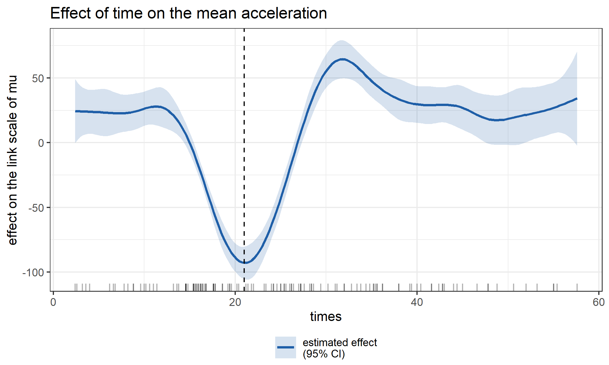
labs() and a vertical line at the time of the minimum of the curve.
3.6 The graphs of the other chapters
Each type of graph is shown in the chapter that introduces the terms or the models it describes. The table lists the graphs, the kind of each one and the chapter of its first use. The kinds are described in Section 3.1.
| Function | Kind | Draws | Chapter |
|---|---|---|---|
plot_effect() |
term | contribution of a term to the predictor, or the parameter, with the partial residuals | this chapter |
plot_param() |
model | one parameter against a covariate | this chapter |
plot_quantiles() |
model | quantiles of the response against a covariate | this chapter |
plot_density() |
model | fitted densities at chosen covariate values | this chapter |
plot_moments() |
model | mean, variance, standard deviation, skewness or kurtosis against a covariate | this chapter |
plot_qq() |
diagnostic | sorted quantile residuals against gaussian quantiles | this chapter |
plot_worm() |
diagnostic | the quantile-quantile graph with the line removed | this chapter |
plot_residuals() |
diagnostic | quantile residuals against a covariate or the predicted median | this chapter |
plot_pit() |
diagnostic | histogram of the probability integral transform | this chapter |
plot_calibration() |
diagnostic | observed coverage of the predicted quantiles | this chapter |
plot_ppc() |
diagnostic | the observed density of the response, or a statistic, against simulated responses | this chapter |
plot_derivative() |
term | derivative of a smooth, with its confidence band | Chapter 7 |
plot_surface() |
term | the smooth of two covariates, with contours | Chapter 7 |
plot_caterpillar() |
term | the estimated effect of each group of a random effect | Chapter 8 |
plot_prior() |
term | the prior of a random effect against the histogram of its estimates | Chapter 8 |
plot_random_cov() |
term | two random coefficients of each group, with the estimated covariance | Chapter 8 |
plot_curves() |
term | a curve for each group of a random smooth | Chapter 10 |
plot_shrinkage() |
term | penalized and unpenalized estimates of the coefficients | Chapter 11 |
plot_path() |
term | coefficients of a penalized term against the hyperparameter | Chapter 11 |
plot_criterion() |
term | the criterion against the hyperparameter | Chapter 11 |
plot_breakpoint() |
term | a broken line with the interval of the break-point and its profile | Chapter 12 |
plot_filter() |
term | the filtered parameter of a score-driven term | Chapter 14 |
plot_news_impact() |
term | the update of a filter against the standardized residual | Chapter 14 |
plot_states() |
term | probabilities of the states of a regime term | Chapter 14 |
plot_regime_density() |
term | the density of the response in each regime | Chapter 14 |
plot_acf() |
diagnostic | autocorrelation of the residuals or of their squares | Chapter 14 |
plot_score() |
diagnostic | contribution of each observation to the score | Chapter 15 |
plot_influence() |
diagnostic | leverage or Cook distance of each observation | Chapter 15 |
A term written by the user has the graph plot_effect() without further work. Section 17.2.1 shows how to write the method of plot_data() that gives a term a graph of its own.